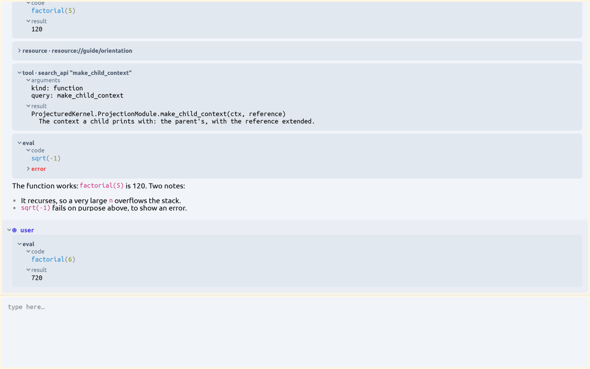
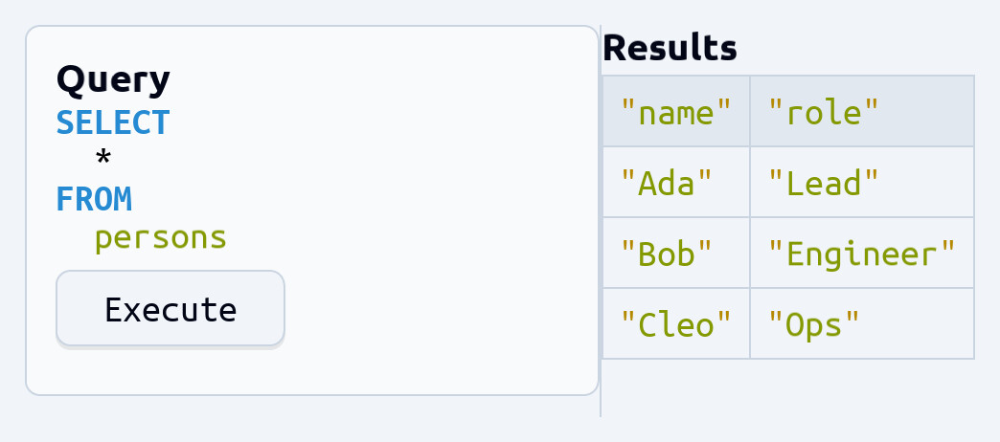
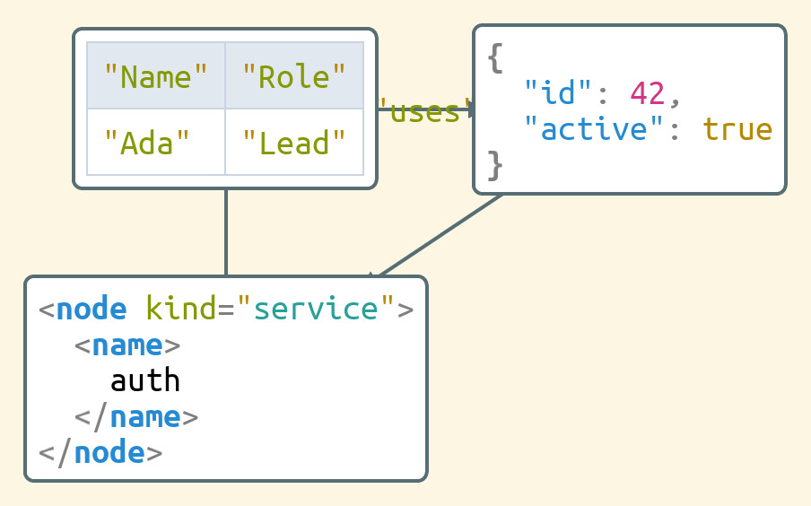
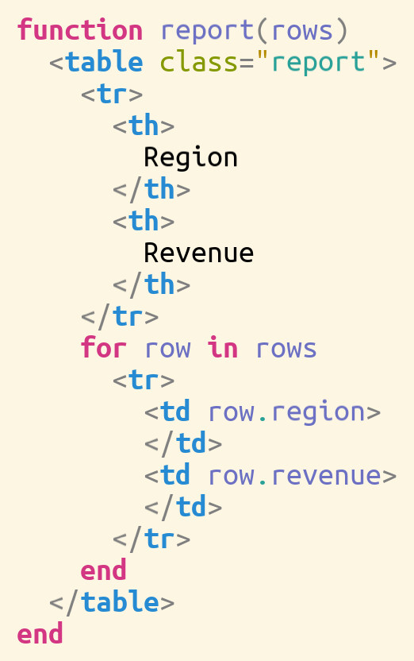

An assistant on the same data
A language model reads the document and the API of the loaded packages, and changes the data with operations, not with line numbers. It runs with a local model through Ollama, or with Claude.
an application · a generic user interface for Julia programs
ProjecturEd works with about twenty kinds of data, among them JSON, XML, Markdown, SQL, Julia code, math, charts and state machines. It shows them in one window, and most views take your edits: a change in a view changes the data, not a text copy of it. It is written in Julia, so it is also a generic user interface for your own programs, and the AI assistant inside it works on the same data, with the same edits, as you.

The idea
A text editor stores your work as a string of characters, and the structure is implicit. ProjecturEd stores the structure: a tree of typed Julia values. What is on the screen is a projection of that data, one of many possible notations, computed from it.
A projection is a pair of functions. The printer makes the view, and records which part of the view came from which part of the data. The reader uses that record to turn an edit in the view into an operation on the data. So a view can be a block of JSON, an outline, a table, a diagram or formatted prose, and each one takes edits.
The data is a string. A parser recovers the structure each time, and there is one notation.
The data is a tree, a table or a graph. Each notation is a projection of it. One piece of data can have several views, and an edit in one shows in the others.
Compared
An application has one way to show its data: a grid, a form, a page. To see the data another way, you copy it into another tool.
The views are projections of one model: a grid, an outline, a form, a diagram. You choose one or write a new one, and the data is not copied.
The model writes characters, and a parser reads them back. A change that does not parse is found after the fact.
The model changes the data with the same typed operations as your key presses: insert an element, replace a value, move the selection. The same tests cover both.
Capabilities
A language model reads the document and the API of the loaded packages, and changes the data with operations, not with line numbers. It runs with a local model through Ollama, or with Claude.
A document of one domain can hold a document of another: a formula in a table cell, JSON inside prose. Navigation and editing cross the boundary, and any part is a document of its own.
Projections chain, nest, sort, filter and focus. A sorted or filtered view still takes edits, because each step maps an edit back through the step below it.
The same views run in a native window, in a terminal and in a browser, and with no screen for tests. A view also goes to a vector PDF, a PNG or an MP4. It runs from source, or as a built binary that needs no Julia.
An edit is a typed change of the data, so the data stays well formed. Type-in of single characters works in most domains, and not yet the same way in all of them.
Each field of the data is a reactive cell. After a change, only the dependent parts of the views are computed again, and only the parts on the screen. A value is static, mutable or reactive, field by field.
A list of gestures drives a session from a script. The result goes to a screenshot or to a recorded video.
The test suite walks every example: the printer output, the reader, and the navigation to each position. A static guard checks the layering of each package.
The selection is a path into the data: a position between two characters, an XML attribute, a function argument, a table column, a whole chapter. It survives a filter, a sort and a change elsewhere in the document.
Ctrl+N notes a part without a change of the document. A paste then puts the same object in a second place, so an edit in one place shows in both. Ctrl+Shift+V pastes a copy instead.
A domain is a package of its own: document types, projections, operations and key bindings. No other domain depends on it, and the general features work on it: navigation, search, the clipboard, filtering, files, every backend and the assistant.
F1 shows the gestures that work at the current selection, computed from the projections in use. Ctrl+Shift+P runs a command by its name.
AI integration
The tools a model can call are a layer of the editor itself: it reads the data you are looking at, searches the API of the loaded packages, writes Julia and runs it, and changes the data with the same typed edits your key presses make. So Ctrl+Z takes back a change by the assistant like one of yours. It runs with a local model through Ollama or with Claude, and an external client gets the same tools over MCP.
Views on demand
The assistant can open a tab, arrange the panes, and build a card, a table or a form to show a result. So a window is put together for the task at hand, by you or by the assistant, from the same parts.
The tools search the modules, types and functions of the loaded packages by name, by pattern or by description, and read their documentation and the guides. The model finds a function before it calls it.
The main tool runs Julia code in the process of the editor, with the editor bound to a variable. There is no fixed list of commands. It is not a sandbox: it is a tool for your own machine.
The assistant edits the data and the projections that show it: it can add a sorted or filtered view, swap a notation, or restructure a document.
The conversation is a document. A turn can hold a table, a formula, a diagram or code, made by the assistant or put there by you.
You can ask for a change in plain words, and then edit the result by hand in the same view.
There is no separate mode for the assistant. It uses the operations that your key presses use, and Ctrl+Z takes back a change of either.
See it in action
A turn of the assistant is structured data: the text, each tool call with its arguments and its result, each piece of Julia it ran. You can fold it, select it, copy it, and run code in it yourself.
Videos
The keys of each video come from a script and play at the speed of a person typing. The editor draws each frame, and nothing is cut or sped up.
An empty document becomes a JSON object, typed with the keyboard alone. A key makes a typed
element, not a character: { makes an object, Tab goes from a key to
its value, " makes a string and , adds the next entry. ↓
leaves a nested object or array. The panel at the bottom right is the gesture log of the editor:
each key, and the operation it made on the data.
To open the same editor from a Julia session with the ProjecturEd packages:
julia> using Projectured, ProjecturedExample, ProjecturedSdl
# an empty JSON document, drawn as JSON → syntax → text → graphics
julia> run_example(JsonNothing(selection = @reference), ChainingProjection(
RecursiveProjection(JsonToSyntax()),
RecursiveProjection(SyntaxToText()),
TextToGraphics(measure = measure_sdl_text)))The window opens with the empty document selected. Press { to start.
The whole JSON domain is two short files:
JsonDocument.jl
says what a JSON document is and what each key does to it, and
JsonToSyntax.jl
says how it looks. They hold about 120 and 140 lines.
The evaluator runs Julia in the program. A canvas that a form returns draws as itself, and it gets a pane of its own beside the evaluator. Each later form adds one part to it: a ring, a dot that circles the ring, a sine and a cosine trace, the links from the dot, and the axes. A part that moves takes a function where it moves, so it follows the clock, and the picture changes in its pane while the forms are typed.
The evaluator builds a small tool from widgets. The first forms make a cell, a button that counts its presses in the cell, and a column that holds the button. An Alt+click selects the button in its result row, Alt+Up selects the column around it, and a split and a paste give the tool a pane of its own. Each later form adds widgets to the tool: a label that counts the presses, a slider and a label that reads it, a text field, and a table of the three values. A label or a table cell that takes a function follows what the function reads, so each widget changes at once when the button is pressed or the slider is dragged.
The presses and the drags are mouse events from the same script as the keys, and the video draws the pointer.
The window paints again only the parts of the screen that changed, and a red outline shows them. The file is Markdown, and each paragraph is a block of its own, with its own chain of projections. A click in the second paragraph paints the caret again, and the status line at the bottom, which says where the caret is. Each typed key paints that paragraph and the status line, and nothing else. When the paragraph grows by one line, the paragraphs below it move down, and they are painted again at their new place. When it shrinks, they move up again.
The editor finds this without a comparison of pixels. Every value on the screen is a reactive cell, and a key changes only the cells that depend on the text it edits. The backend paints again the graphics whose cells changed, and the graphics that moved. In the video each outline stays for 0.6 seconds, so that a repaint of a single frame can be seen.
To see the same outline in the program, open a Markdown file with the two switches on:
$ PROJECTURED_PARTIAL_RENDER=1 PROJECTURED_DEBUG_DIRTY=1 bin/projectured notes.mdExamples
Each one is a document or a projection drawn by the editor. The code beside it is what makes it.
Each coordinate is a cell that reads the clock of the editor, so the scene is drawn again every frame.
# each animated value is a cell that reads the editor's clock,
# so the scene re-renders every frame
dot = GraphicsCircle(
() -> cx + r*cos(angle(get_reactive_time(clock))),
() -> cy - r*sin(angle(get_reactive_time(clock))),
7, color_solarized_magenta)
GraphicsCanvas([background, ring, sin_chart, cos_chart, dot]; w, h)
A cell can hold a formula that is computed again when you edit. A table domain and a math domain, composed.
# a table widget whose cells can be live math, not just values
WidgetTable(Point2D(40, 40),
[PrimitiveString("A"), PrimitiveString("B"), PrimitiveString("C")],
[PrimitiveString("1"), PrimitiveString("2"), PrimitiveString("3")],
[[PrimitiveNumber(10), PrimitiveNumber(20), PrimitiveNumber(30)],
# formulas, re-evaluated as you edit:
[MathBinaryOperation(:+, MathVariable("A"), MathVariable("B")),
MathBinaryOperation(:*, PrimitiveNumber(2), MathVariable("B")),
MathBinaryOperation(:-, MathVariable("C"), PrimitiveNumber(5))]])
A sorted view is one more projection in the chain. Remove it, and the original order is back: the data was not changed.
# a sorted view is just one more projection in the pipeline —
# the underlying list is never reordered
ChainingProjection(
SortingProjection(by = x -> x.value),
# … then render the collection as text …
)
The reflection projection shows a plain struct as a form with text fields and checkboxes, with no user interface code.
# reflected into a form: the String becomes a text field,
# each Bool a checkbox — no interface code written
@document struct SearchSettings
query::String
case_insensitive::Bool
whole_word::Bool
end
Widgets and SQL in one document: the query and a button on the left, the result table on the right. A split pane, a card, a button, a table and an SQL statement, composed.
# a query tool from widgets + SQL — one document, both domains
WidgetSplitPane(:horizontal, [
WidgetCard(title = "Query", content = CellVector([
SqlSelectStatement("persons"), # SELECT * FROM persons
WidgetButton(Point2D(0,0), Point2D(120,40), "Execute")])),
WidgetTitlePane("Results",
WidgetTable(["name", "role"], [],
[["Ada", "Lead"], ["Bob", "Engineer"], ["Cleo", "Ops"]]))])
You give the vertices and the edges; the layout engine places the nodes and routes the connections. Each node here is a document of another domain: a table, JSON, an XML element.
# nodes are whole documents — a table, some JSON, an XML element;
# describe vertices and edges, the layout & routing are automatic
v_table = GraphVertex(table) # table :: WidgetTable
v_json = GraphVertex(json) # json :: JsonObject
v_xml = GraphVertex(xml) # xml :: XmlElement
GraphGraph(
[v_table, v_json, v_xml],
[GraphEdge(v_table, v_json; directed=true, label="uses"),
GraphEdge(v_json, v_xml; directed=true),
GraphEdge(v_table, v_xml; directed=false)])
A Julia function whose body is an XML table, and the rows are a Julia loop. One document nests Julia, XML and Julia again, and each level takes edits in place.
# Julia and XML document constructors, combined into one tree
# (the editor renders it as the syntax shown alongside)
JuliaFunction(JuliaIdentifier("report"), [JuliaIdentifier("rows")],
JuliaBlock([
XmlElement("table", [XmlAttribute("class", "report")], [
XmlElement("tr", [XmlElement("th", [XmlText("Region")]),
XmlElement("th", [XmlText("Revenue")])]),
JuliaFor([JuliaForIterator(JuliaIdentifier("row"),
JuliaIdentifier("rows"))],
JuliaBlock([
XmlElement("tr", [
XmlElement("td", [JuliaFieldAccess(JuliaIdentifier("row"),
JuliaIdentifier("region"))]),
XmlElement("td", [JuliaFieldAccess(JuliaIdentifier("row"),
JuliaIdentifier("revenue"))])])]))])]))Catalog
A document belongs to a domain, and a projection turns it into a notation. Both sets are open, and projections compose.
Each projection builds on the ones below it, and reuses their layout and their readers. So a sorted, filtered or searched view still takes edits.
Lineage & status
ProjecturEd began as an editor written in Common Lisp, and its source is public. The Julia version is a new implementation of the same idea, with more domains, more backends and an AI assistant.
It is more than a hundred thousand lines of Julia, written through AI-assisted development with an automatic test suite. None of them was typed by hand.
It is under development. Most features work, and it is not a finished product: type-in is not the same in every domain, a table does not take an edit yet, and a click selects only where a view wires it. Write to us with a question, a problem or an idea.